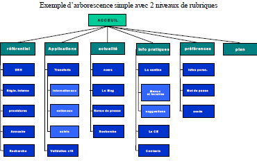

- La phase de conception et ses éléments
- Les parties fonctionnelle et technique
- Principes d’ergonomie et de navigation (arborescence, schéma fonctionnel et storyboard)
- L’arborescence
- Le Schéma Fonctionnel
- Le Schéma Fonctionnel
- Le Storyboard
- Eléments d’ergonomie
- La Charte Graphique
- Les écrans maîtres
- La page d’accueil (home Page)
La phase de conception et ses éléments
• Lors de la conception de sites Internet et Intranet, il est
nécessaire de suivre plusieurs étapes logiques
indispensables.
• Celles-ci nous servent à structurer notre démarche mais
également à valider le projet étape par étape afin d'éviter
tout problème ou remise en cause de l'application dans la
suite des événements.
• La phase de conception doit être la plus exhaustive
possible dans son contenu afin de faciliter la phase de
production et ainsi éviter toute ambiguïté sur les
fonctionnalités.
On distingue deux parties distinctes :
-
La partie fonctionnelle : comment répondre aux besoins des collaborateurs de l'entreprise à travers le futur outil informatique.
-
La partie technique : comment "traduire" les fonctionnalités en techniques informatiques et quelle plate forme informatique va "accueillir" l'application.
• La partie fonctionnelle se compose : De spécifications fonctionnelles D'une arborescence (si le projet en nécessite une) D'un schéma fonctionnel D'un storyboard le plus exhaustif possible. • La partie technique se compose quant à elle : De spécifications techniques De spécifications d'architecture • Ces deux parties doivent être réalisées ensemble. • C'est à dire que les différents acteurs doivent s'échanger toutes les informations et discuter de la faisabilité des fonctionnalités
Principes d’ergonomie et de navigation (arborescence, schéma fonctionnel et storyboard)
• Lors de la conception de sites Internet, plusieurs
documents de conception sont réalisés.
• Ces documents, notamment :
• l’arborescence,
• le schéma fonctionnel
• le storyboard forment un ensemble dynamique qui permet de donneraux concepteurs et aux futurs utilisateurs une vue globale de l’interface.
L’arborescence
• L’arborescence a pour but de lister avec une simple
relation mère/fille les différentes rubriques.
• Elle sert à répondre aux questions suivantes :
• Quelle est la liste des rubriques ?
• Quelles sont les rubriques mères (ou de niveau 1 ) ?
• Comment se structure l’arbre des rubriques en termes
de rubriques mères et filles (qui peuvent être de niveau 2
ou 3 …) ?
• Une règle habituellement utilisée demande d’éviter de
dépasser les trois clics à l’utilisateur pour atteindre
l’information recherchée.
• Il est donc recommandé d’éviter de construire des espaces
contenant plus de 3 niveaux.
• Mais attention, cette règle ne doit pas être utilisée
aveuglement.
• Si une fonctionnalité nécessite 4 ou 5 afin que l’utilisateur
comprenne davantage le fonctionnement de celle ci, alors il est
nécessaire d’écarter la règle des 3 clics.
• L’arborescence est totalement indépendante du média et des
technologies utilisées.

Le Schéma Fonctionnel
• Le Schéma Fonctionnel est un complément à l’arborescence.
• Le Schéma Fonctionnel a pour vocation d’organiser les rubriques
entre elles, de hiérarchiser l’information et de déterminer les
processus fonctionnels.
• Il peut être défini comme une cartographie fonctionnelle du site.
• Il permet de répondre à plusieurs questions :
Quelles sont les fonctionnalités dans les rubriques ?
-
A quoi renvoient-elles en termes techniques ?
Quels sont les liens des fonctionnalités entre elles (certaines pages peuvent être reliées à plusieurs rubriques) ?
-
Si la structure du site doit être dynamique, le Schéma Fonctionnel doit permettre de tester et de visualiser cette évolution et de quantifier les limites à partir desquelles.
• A partir de l’arborescence, le Schéma Fonctionnel permet de regrouper ou relier l’information et les rubriques.
• Il prend comme approche le point de vue fonctionnel et ergonomique de l’utilisateur.
• Il s’attache plus particulièrement aux fonctionnement des différentes rubriques entre elles et à leur relation au système d’information.
• A la différence de l’arborescence, il permet d’obtenir une vision globale du site.